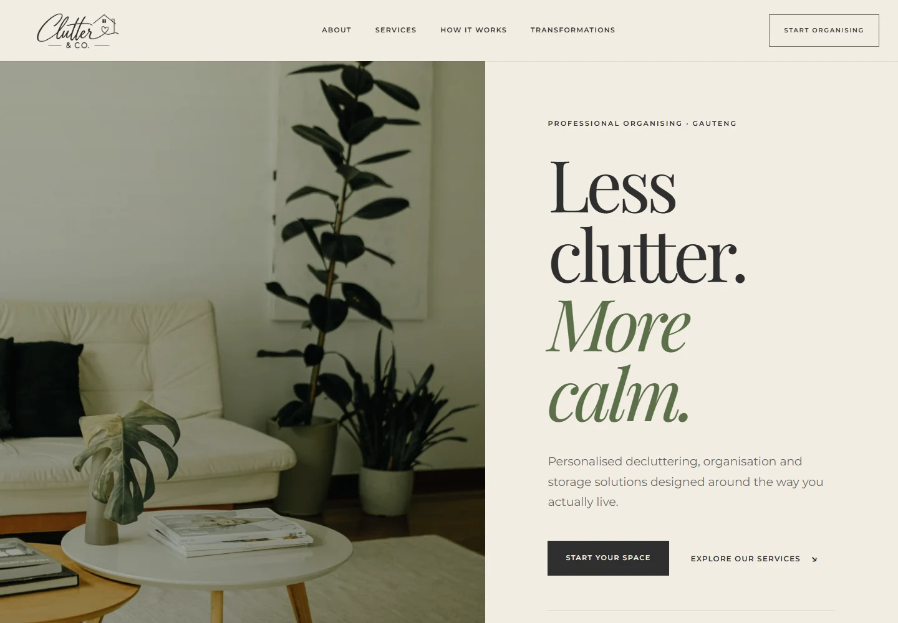
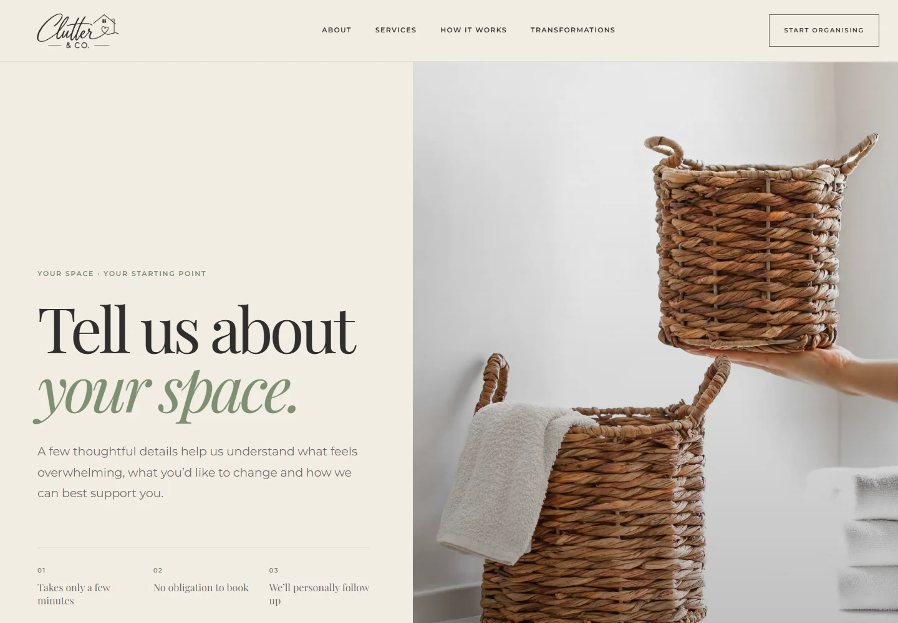

Clutter & Co
WEB DESIGN / DEVELOPMENTA calmer digital starting point for a more organised home.
Make getting organised feel approachable.
Clutter & Co helps people declutter, organise and create practical storage systems for homes and workplaces across Gauteng. ALTO designed and developed a website that carries the brand’s warm, understated identity into a clear digital experience.
Service pages explain how the team can help, while a guided questionnaire gives prospective clients a way to describe their space before the first conversation.
Warm neutral colours, sage accents and expressive typography, carried across the responsive website.

A dedicated enquiry journey introduces the client questionnaire and sets a welcoming tone.
Clarity without losing warmth.
The website needed to distinguish decluttering and organisation from cleaning or interior styling, explain the process and help clients take a practical first step.
A considered path from browsing to enquiry.
ALTO brought together responsive page layouts, dedicated service information, the client questionnaire and clear contact routes within a consistent visual system.